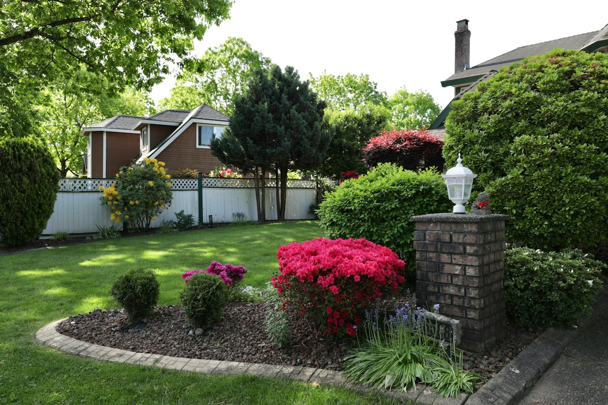
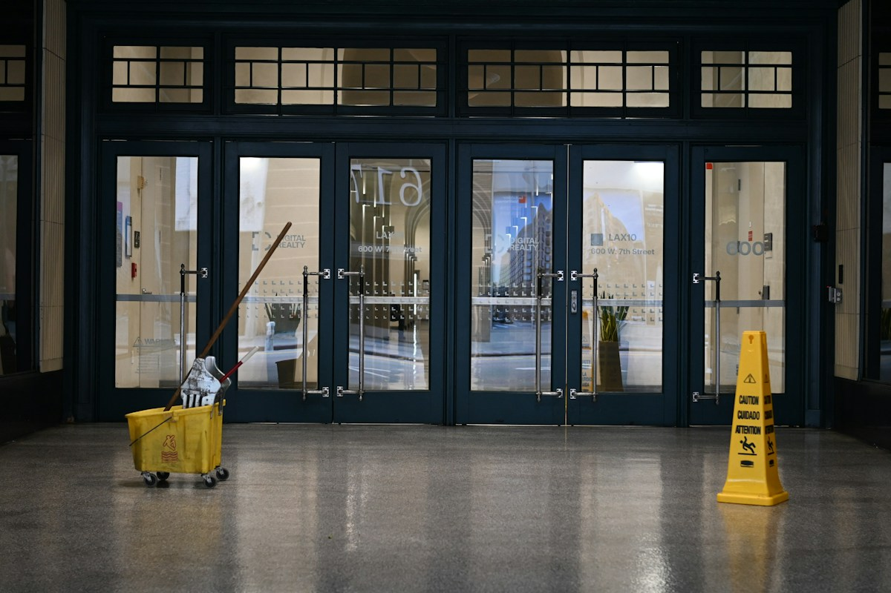

Wetzikon ZH
Garten, Haus und Sauberkeit. Alles im Griff.
HGR Hauswartung Gartenunterhalt Reinigung kümmert sich um Gartenunterhalt, Hauswartung und Reinigung, für Privat und Gewerbe.

- Gartenunterhalt
- Hauswartung
- Reinigung
Leistungen
Drei Bereiche aus Wetzikon.
-

Gartenunterhalt
Pflege von Gärten und Grünflächen.
Vorschlag, noch zu bestätigen
- Rasen mähen
- Hecken und Sträucher schneiden
- Beete jäten und pflegen
-
Hauswartung
Betreuung von Liegenschaften.
Vorschlag, noch zu bestätigen
- Eingang und Treppenhaus in Ordnung halten
- Umgebung und Aussenbereich pflegen
- Kleine Mängel melden
-

Reinigung
Reinigung für Privat und Gewerbe.
Vorschlag, noch zu bestätigen
- Wohnungen und Häuser
- Büros und Geschäftsräume
- Regelmässig oder einmalig
So könnte es laufen Vorschlag, noch zu bestätigen
- Anfrage. Sie melden sich per Telefon oder E-Mail.
- Besprechung. Sie klären, was zu tun ist.
- Ausführung. Die Arbeiten finden nach Absprache statt.
Kontakt
Haben Sie Fragen oder brauchen Sie Unterstützung? Melden Sie sich einfach.
Telefon
Mobil
Adresse
HGR HauswartungGartenunterhalt Reinigung
Rosinlistrasse 1
8623 Wetzikon ZH